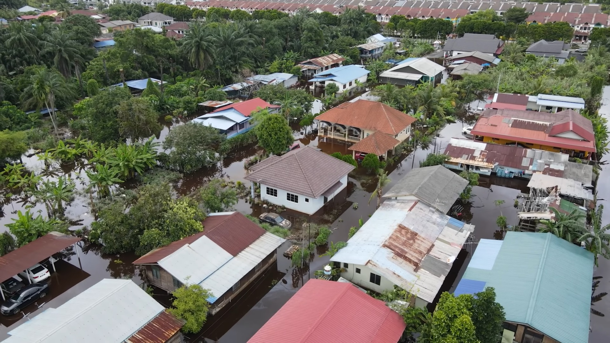
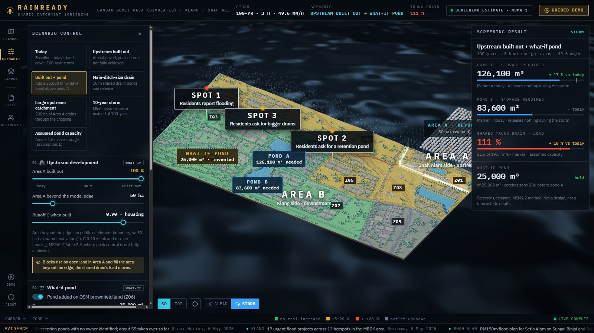

One month's rain fell in a single day.
In Bandar Bukit Raja, residents say the water reached three metres.

RainReady
In Bandar Bukit Raja, it keeps happening.
Jalan Makyong floods at least three times a year, residents say
JPS Selangor logged ponding at Bandar Bukit Raja in 2023, and again in 2024
residents from 48 associations petitioned the Menteri Besar in 2024
It is quite urgent, and this is a top priority for us.
Meet Aiman.
“Residents ask me why their street floods. I can show them our ponds. But the water also comes from upstream, under another council. How do I show everyone their part, before the next storm?”
Property lines stop at the fence. Water doesn't.
Effort is not what's missing.
For Setia Alam, upstream of Bandar Bukit Raja
Across 13 flood hotspots in Klang
Identified across the state; about 55 taken over
Wetland Townpark, designed to hold up to 50,000 m³
25 % built in Nov 2024; completion moved to Mar 2025
A shared picture is.
Meet RainReady.

One picture, where today there are many.
Each part exists somewhere: official warnings, engineering models, resident reporting in Chatham County, Chennai and Jakarta. We claim the combination.
Now Aiman can show everyone their part.
Sime Darby Property
- Sees each pond's storage gap
- Tests a new pond before paying for it
- Brings one Brief to the joint meeting
Klang and Shah Alam councils
- See what crosses the council line
- As a difference between scenarios, not blame
JPS Selangor
- Its pond list and drains in one sourced picture
- Reports routed to the right channel
Residents
- Report a blocked drain with a photo
- A move-now plan on official warnings
It works today, on public data.
A 12-month pilot in Bandar Bukit Raja.
Real data in
The trunk drain's size, the ponds' capacities and handover status
Both doors open
SDP, both councils and JPS plan; residents' associations report
One joint meeting
One Brief; every line of the responsibility record confirmed by its party
Access to drain and pond records, and a pilot in Bandar Bukit Raja.